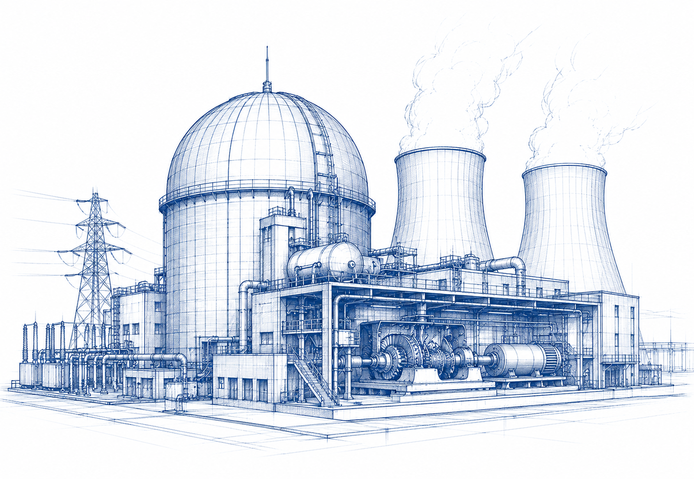

REF / PJIR-2024
SYSTEM / ENERGY · SCALE / N.T.S.
Princeton Journal of Interdisciplinary Research
Molten Salt Reactor Feasibility for India's 2070 Net-Zero Goal
Evaluated technical and policy feasibility of molten salt reactors as a pathway to India's net-zero carbon commitment, combining nuclear analysis with energy policy frameworks.
MENTOR / DR. GEORGE ANWAR · UC BERKELEY
View Research Paper ↗ View Certification of Publication ↗